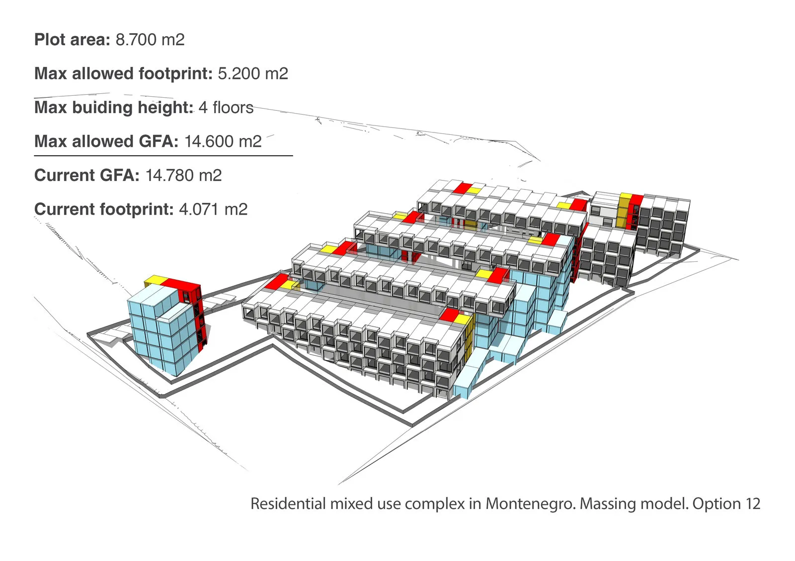

Modele bryłowe i studia wykonalności na wczesnym etapie deweloperskim: przypadek Czarnogóry

Autor: Ivan Moiseenko (IMAGE), nasz współpracownik. Streszczenie artykułu oryginalnego opublikowanego 11 czerwca 2026.
Dlaczego modele bryłowe mają znaczenie
W etapach RIBA 0, 1 i 2, dopóki projekt koncepcyjny nie zostanie zatwierdzony i ukończony, modele bryłowe są potężnym i niezbędnym narzędziem. Dają jakościową interpretację danych ilościowych i ekonomicznych oraz założeń określonych przez klienta i pozostałych uczestników procesu deweloperskiego.
Projekt
Wspólnie z Antonem Medennikovem IMAGE opracowało niedawno etap studiów wykonalności i modelowania bryłowego dla kompleksu mieszkań na wynajem o funkcji mieszanej w Czarnogórze. Był to pierwszy krok do etapu przedkoncepcyjnego: przetestowanie różnych hipotez i ekonomiki jednostkowej, sprawdzenie modelu finansowego i wykonalności oraz dojście do najbardziej zrównoważonego scenariusza pod względem finansowym, architektonicznym, przestrzennym, ścieżki klienta i innych składników udanego przedsięwzięcia deweloperskiego.
Metoda: CRD i program przestrzenny projektu
Projekt prowadzony jest według mapy drogowej RIBA, więc etap wykonalności przejął niektóre jej cechy. Pierwszym krokiem był dokument wymagań klienta (Client Requirements Document, CRD), który łączy i podsumowuje wagi i interesy wszystkich interesariuszy.
Na tej podstawie wydano program przestrzenny projektu (Spatial Project Programme, SPP), oparty na wskaźniku intensywności zabudowy działki i innych ograniczeniach oraz na parametrach jakościowych i ilościowych z CRD. Oba dokumenty są niezbędnym warunkiem skutecznych studiów wykonalności i modelowania bryłowego oraz testowania i kontroli ekonomicznych, przestrzennych i architektonicznych składników projektu.
Dwa scenariusze
Ponieważ na tym etapie RIBA metody budowy nie są jeszcze określone, przetestowano dwa scenariusze programu przestrzennego: klasyczny program deweloperski oraz program DfMA odpowiedni zarówno dla prefabrykacji, jak i budownictwa modułowego. Obie opcje zachowują elastyczność w późniejszych etapach RIBA i pozwalają na scenariusz mieszany, w którym metody tradycyjne i prefabrykowane razem dają skuteczny program projektu.
Częściowo wykorzystano też generatywne narzędzia projektowe i AI: opracowano 20 wariantów z częściową pomocą Autodesk Forma i Snaptrude, narzędzia do projektowania koncepcyjnego wspieranego przez AI, aby przyspieszyć dyskusję między interesariuszami we wczesnym cyklu deweloperskim.
Wniosek
Ostateczny wariant nie został jeszcze wybrany. Główna lekcja z tego ćwiczenia: solidne przygotowanie, dokumenty CRD i SPP wraz z iteracyjną, krokową logiką projektowania, to niezbędna część udanego rozwoju i realizacji projektu.